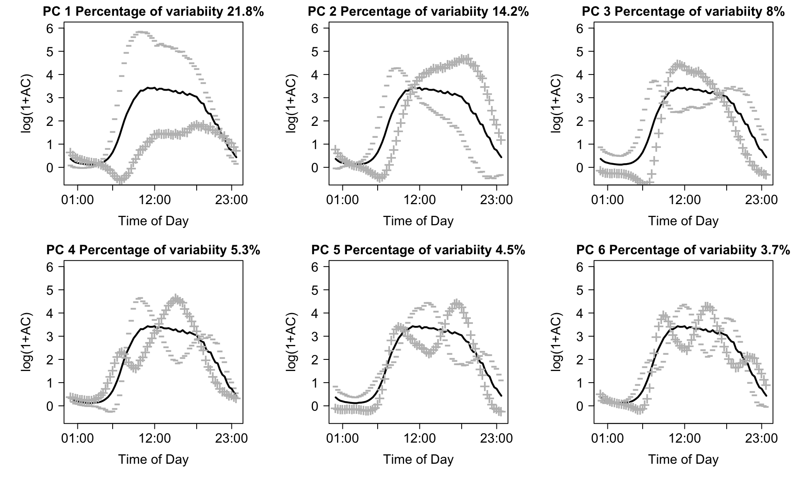
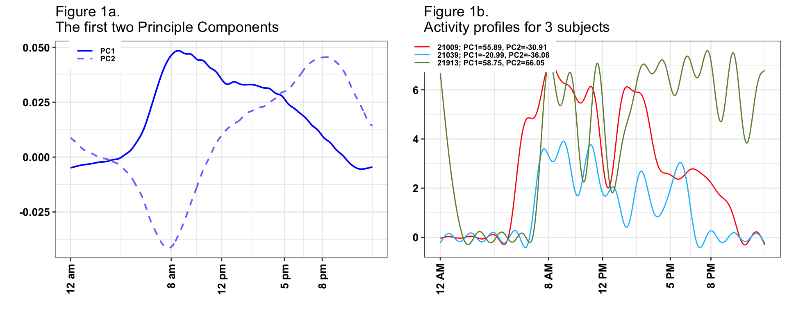
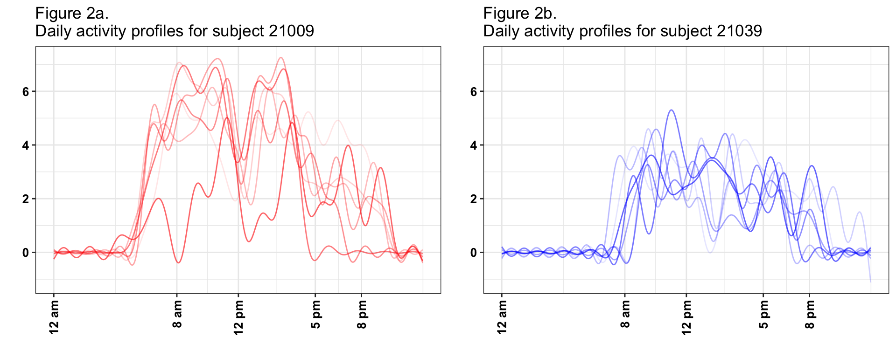
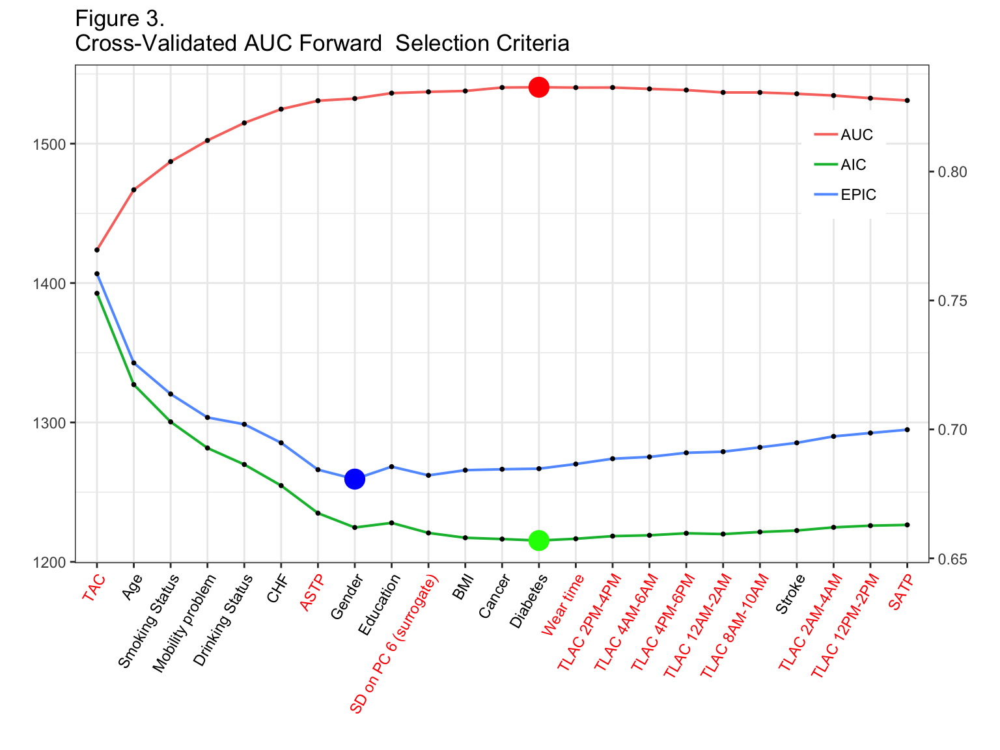
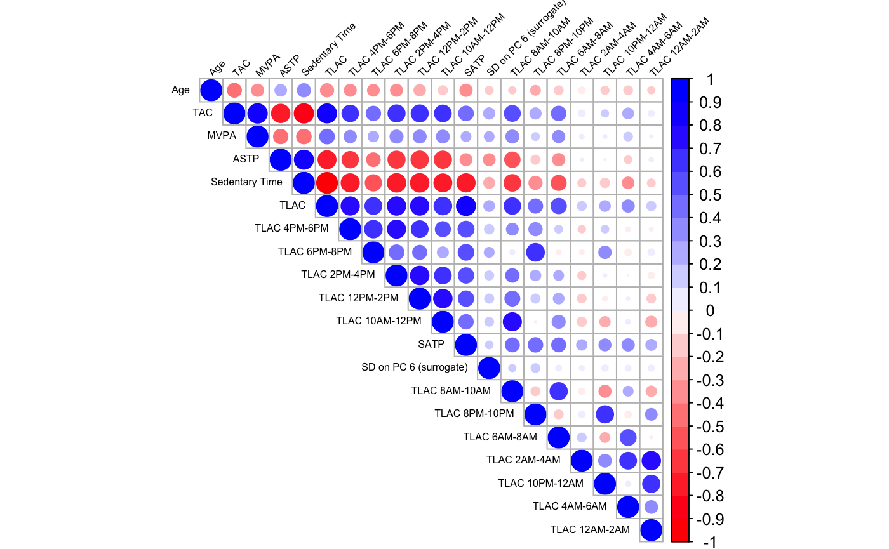
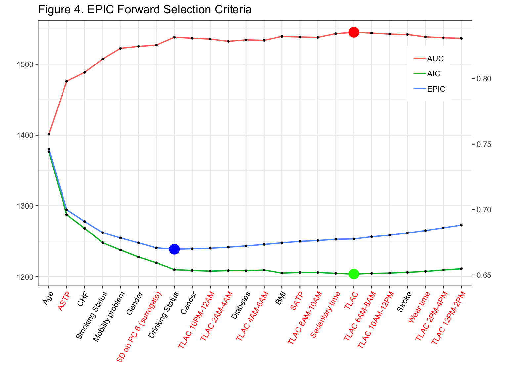
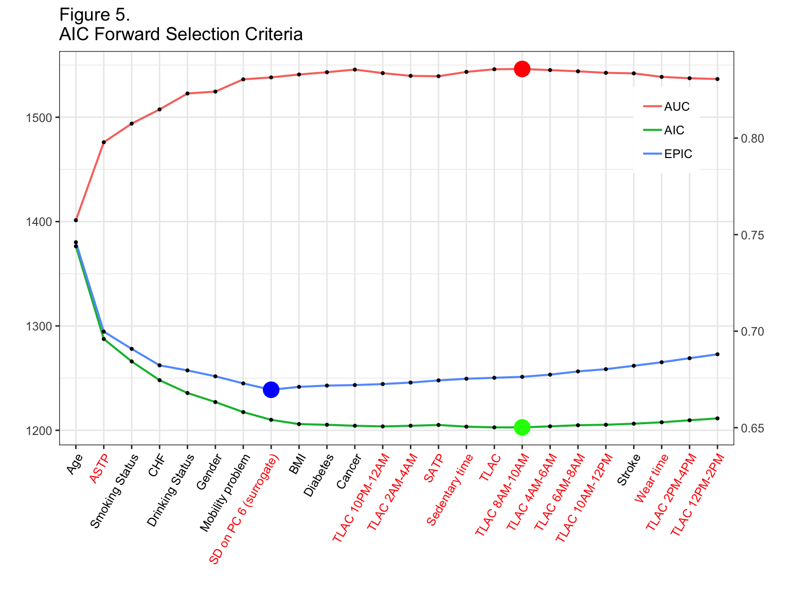

vignettes/vignette_prediction.Rmd
vignette_prediction.RmdWe access the prediction performance of objective physical activity measures and their ranking relative to other established predictors of 5-year all-cause mortality in the US. In this analysis, we use participants between 50 and 85 years old from the 2003-2004 and 2005-2006 samples of the National Health and Nutritional Examination Survey (NHANES, n=2969, number of deaths in 5 years=294) who wore a hip-worn accelerometer in the free living environment for up to 7 days.
#Prerequisites
The following packages will be used in this vignette to provide illustration of NHANES 5-year mortality prediction model.
library("knitr")
library("kableExtra")
library("devtools")
library("ggplot2")
library("gridExtra")
library("corrplot")
library("reshape2")
library("magrittr")
library("plyr")
library("dplyr")
library("survey")
library("mgcv")
library("refund")
library("rnhanesdata")We start by downloading NHANES 2003-2004 and 2005-2006 cohorts’ information, processing data and combining survey weights for the two cohorts using R package rnhanesdata (Leroux, 2018). Items 1 - 11 illustrate processing steps we performed to obtain the subset of NHANES data that meets this analysis criteria, and derive activity summaries. These steps produce an R object called “data_analysis”, which is used in 5-year mortality prediction model. For simplicity of presentation, we suppress code printout at each step, which can be changed by setting echo = TRUE in the R chunk option (e.g., {r, echo = TRUE}).
# Create a (local) temporary directory
# where lab measurement (cholesterol, blood presure) data will be downloaded from the CDC website
# and then loaded into R. These files need to be downloaded separately as
# the raw files associated with these lab measurements are not included in the rnhanesdata package.
# Note that this way of creating a temporary directory is a bit "hacky".
# A better solution would be to use the tempdir() function, but this can lead to issues with compiling the markdown
# document. As a result, here we use the current working directory, which, when compiled, is the directory where the .Rmd
# file is saved.
# dir_tmp <- file.path(getwd(), "tmp_dat_vignette")
dir_tmp = tempfile()
dir.create(dir_tmp)
if (!dir.exists(dir_tmp)){
dir.create(dir_tmp, showWarnings = FALSE)
}
dl_file = function(url) {
bn = basename(url)
destfile = file.path(dir_tmp, bn)
if (!file.exists(destfile)) {
out = download.file(url, destfile = destfile, mode="wb")
}
stopifnot(file.exists(destfile))
}
## download the lab measurement data for the cohort 2003-2004
# Cholesterol - Total & HDL: LBXTC and LBXHDD
dl_file("https://wwwn.cdc.gov/Nchs/Nhanes/2003-2004/L13_C.XPT")
# Blood Pressure: BPXSY1 , BPXSY2, BPXSY3 and BPXSY4
dl_file("https://wwwn.cdc.gov/Nchs/Nhanes/2003-2004/BPX_C.XPT")
## download the lab measurement data for the cohort 2005-2006
# Total Cholesterol: LBXTC
dl_file("https://wwwn.cdc.gov/Nchs/Nhanes/2005-2006/TCHOL_D.XPT")
# HDL Cholesterol: LBDHDD
dl_file("https://wwwn.cdc.gov/Nchs/Nhanes/2005-2006/HDL_D.XPT")
# Blood Pressure, up to 4 measurements per person: BPXSY1 , BPXSY2, BPXSY3 and BPXSY4
dl_file("https://wwwn.cdc.gov/Nchs/Nhanes/2005-2006/BPX_D.XPT")
varnames <- c("LBXTC","LBXHDD","LBDHDD", ## 1. cholesterol. Note LBXHDD and LBDHDD are the same variable,
## but different names for 2003-2004 and 2005-2006 cohorts
"BPXSY1","BPXSY2","BPXSY3", "BPXSY4" ## 2. blood pressure measurements
)
## load and merge the lab data
lab_data <- process_covar(varnames = varnames,localpath=dir_tmp)
## change column name for cholesterol variable that changed names
lab_data$Covariate_C = lab_data$Covariate_C %>%
rename(LBDHDD = LBXHDD)
## combine waves
CVMarkers <- bind_rows(lab_data$Covariate_C, lab_data$Covariate_D)
rm(list=c("lab_data","dir_tmp","varnames"))## load the data
data("PAXINTEN_C");data("PAXINTEN_D")
data("Flags_C");data("Flags_D")
data("Mortality_2011_C");data("Mortality_2011_D")
data("Covariate_C");data("Covariate_D")
## re-code activity counts which are considered "non-wear" to be 0
## this doesn't impact many data points, most estimated non-wear times correspond to 0 counts
col_vars = paste0("MIN",1:1440)
PAXINTEN_C[, col_vars] <- PAXINTEN_C[, col_vars]*Flags_C[, col_vars]
PAXINTEN_D[, col_vars] <- PAXINTEN_D[, col_vars]*Flags_D[, col_vars]
## Merge covariate, mortality, and accelerometry data
## note that both PAXINTEN_* and Covariate_* have a column
## called "SDDSRVYR" indicating which NHANES wave the data is associated with.
## To avoid duplicating this column in the merged data, we add this variable to the "by"
## argument in left_join()
AllAct_C <- left_join(PAXINTEN_C, Mortality_2011_C, by = "SEQN") %>%
left_join(Covariate_C, by=c("SEQN", "SDDSRVYR"))
AllAct_D <- left_join(PAXINTEN_D, Mortality_2011_D, by = "SEQN") %>%
left_join(Covariate_D, by=c("SEQN", "SDDSRVYR"))
AllFlags_C <- left_join(Flags_C, Mortality_2011_C, by = "SEQN") %>%
left_join(Covariate_C, by=c("SEQN", "SDDSRVYR"))
AllFlags_D <- left_join(Flags_D, Mortality_2011_D, by = "SEQN") %>%
left_join(Covariate_D, by=c("SEQN", "SDDSRVYR"))
## clean up the workspace for memory purposes
rm(list=c(paste0(c("PAXINTEN_", "Covariate_","Mortality_2011_","Flags_"),rep(LETTERS[3:4],each=4))))
gc()## used (Mb) gc trigger (Mb) limit (Mb) max used (Mb)
## Ncells 1971989 105.4 3991171 213.2 NA 3339292 178.4
## Vcells 156392454 1193.2 401450284 3062.9 16384 348300019 2657.4## combine data for the two waves
AllAct <- bind_rows(AllAct_C,AllAct_D)
rm(list = c("AllAct_C","AllAct_D"))
AllFlags <- bind_rows(AllFlags_C,AllFlags_D)
rm(list = c("AllFlags_C","AllFlags_D"))
#merge with cardiovascular markers
AllAct <- left_join(AllAct, CVMarkers, by = "SEQN")
AllFlags <- left_join(AllFlags, CVMarkers, by = "SEQN")
## clean up the workspace again
rm(list = "CVMarkers");
gc()## used (Mb) gc trigger (Mb) limit (Mb) max used (Mb)
## Ncells 1969410 105.2 3991171 213.2 NA 3991171 213.2
## Vcells 157489009 1201.6 401450284 3062.9 16384 401425426 3062.7## Code year 5 mortality, NAs for individuals with follow up less than 5 years and alive
AllAct$yr5_mort <- AllFlags$yr5_mort <- as.integer(
ifelse(AllAct$permth_exm/12 <= 5 & AllAct$mortstat == 1, 1,
ifelse(AllAct$permth_exm/12 < 5 & AllAct$mortstat == 0, NA, 0))
)
## Create Age in years using the age at examination (i.e. when participants wore the device)
AllAct$Age <- AllFlags$Age <- AllAct$RIDAGEEX/12
## Re-level comorbidities to assign refused/don't know as not having the condition
## Note that in practice this does not affect many individuals, but it is an assumption we're making.
levels(AllAct$CHD) <- levels(AllFlags$CHD) <- list("No" = c("No","Refused","Don't know"), "Yes" = c("Yes"))
levels(AllAct$CHF) <- levels(AllFlags$CHF) <- list("No" = c("No","Refused","Don't know"), "Yes" = c("Yes"))
levels(AllAct$Stroke) <- levels(AllFlags$Stroke) <- list("No" = c("No","Refused","Don't know"), "Yes" = c("Yes"))
levels(AllAct$Cancer) <- levels(AllFlags$Cancer) <- list("No" = c("No","Refused","Don't know"), "Yes" = c("Yes"))
levels(AllAct$Diabetes) <- levels(AllFlags$Diabetes) <- list("No" = c("No","Borderline", "Refused","Don't know"), "Yes" = c("Yes"))
## Re-level education to have 3 levels and categorize don't know/refused to be missing
levels(AllAct$EducationAdult) <- levels(AllFlags$EducationAdult) <- list("Less than high school" = c("Less than 9th grade", "9-11th grade"),
"High school" = c("High school grad/GED or equivalent"),
"More than high school" = c("Some College or AA degree", "College graduate or above"))
## Re-level alcohol consumption to include a level for "missing"
levels(AllAct$DrinkStatus) <- levels(AllFlags$DrinkStatus) <- c(levels(AllAct$DrinkStatus), "Missing alcohol")
AllAct$DrinkStatus[is.na(AllAct$DrinkStatus)] <- AllFlags$DrinkStatus[is.na(AllAct$DrinkStatus)] <- "Missing alcohol"
# systolic blood pressure calculation
AllAct$SYS <- AllFlags$SYS <- round( rowMeans(AllAct[,c("BPXSY1","BPXSY2","BPXSY3", "BPXSY4")], na.rm = TRUE))
## Re-order columns so that activity and wear/non-wear flags are the last 1440 columns of our two
## data matrices. This is a personal preference and is absolutely not necessary.
act_cols <- which(colnames(AllAct) %in% paste0("MIN",1:1440))
oth_cols <- which(!colnames(AllAct) %in% paste0("MIN",1:1440))
AllAct <- AllAct[,c(oth_cols,act_cols)]
AllFlags <- AllFlags[,c(oth_cols,act_cols)]
rm(list=c("act_cols","oth_cols"))## Assign just the activity and wear/non-wear flag data to matrices.
## This makes computing the features faster but is technically required.
act_mat <- AllAct[,paste0("MIN",1:1440)]
act_mat = as.matrix(act_mat)
## replace NAs with 0s
for (icol in seq(ncol(act_mat))) {
act_mat[, icol][is.na(act_mat[, icol])] <- 0
}
AllAct$TAC <- AllFlags$TAC <- rowSums(act_mat)
AllAct$TLAC <- AllFlags$TLAC <- rowSums(log(1 + act_mat))
AllAct$ST <- AllFlags$ST <- rowSums(act_mat < 100)
AllAct$MVPA <- AllFlags$MVPA <- rowSums(act_mat >= 2020)
# compute total log activity count in each 2-hr window,
# 2 hour (120 minutes) binning window
tlen <- 120
nt <- floor(1440/tlen)
# create a list of indices for binning into 2-hour windows
inx_col_ls <- split(1:1440, rep(1:nt,each=tlen))
Act_2hr <- sapply(inx_col_ls, function(x) rowSums(log(1+act_mat[,x,drop=FALSE])))
colnames(Act_2hr) <- paste0("TLAC_",c(1:12))
rm(list=c("tlen","nt","inx_col_ls"))act_mat = act_mat >= 100
## calculate fragmentation measures
get_sed_act = function(x){
mat <- rle(x)
rm(x)
sed <- mat$lengths[!mat$values]
act <- mat$lengths[mat$values]
sed <- ifelse(length(sed) == 0, NA, mean(sed))
act <- ifelse(length(act) == 0, NA, mean(act))
c(sed, act)
}
bout_mat = matrix(nrow = 2, ncol = nrow(act_mat))
for (i in seq(nrow(act_mat))) {
bout_mat[, i] = get_sed_act(act_mat[i, ])
}
rm(act_mat)AllAct$SBout <- AllFlags$SBout <- bout_mat[1,]
AllAct$ABout <- AllFlags$ABout <- bout_mat[2,]
AllAct$SATP <- AllFlags$SATP <- 1/AllAct$SBout
AllAct$ASTP <- AllFlags$ASTP <- 1/AllAct$ABout
rm(bout_mat)| BMI | Education | Bad Accel Data | Mortality | Follow-up | Lab | |
|---|---|---|---|---|---|---|
| BMI | 35 | 0 | 8 | 1 | 0 | 7 |
| Education | 0 | 6 | 2 | 0 | 0 | 1 |
| Bad Accel Data | 8 | 2 | 517 | 4 | 2 | 57 |
| Mortality | 1 | 0 | 4 | 16 | 0 | 1 |
| Follow-up | 0 | 0 | 2 | 0 | 17 | 1 |
| Lab | 7 | 1 | 57 | 1 | 1 | 293 |
Create our dataset for analysis, “data_analysis”, with one row per subject containing only those subjects who meet our inclusion criteria.
Calculate subject specific averages of the accelerometry features using only the “good” days of data.
Get log(count +1) activity data in a matrix format and conduct functional Principal Component analysis (fPCA) using the fpca.face() function with 50 knots in the refund package in R.
Act <- log(1 + Act_Analysis[,paste0("MIN",1:1440)])
Act[is.na(Act)] <- 0
Act = as.matrix(Act)
fpca_fit <- fpca.face(Act,knots=50)
| Estimate | Pr(>|t|) | OR Estimate | OR Lower CL | OR Upper CL | |
|---|---|---|---|---|---|
| Intercept | -7.679 | 0.000 | 0.000 | 0.000 | 0.004 |
| Age | 0.080 | 0.000 | 1.083 | 1.059 | 1.109 |
| Former Smoker | 0.525 | 0.013 | 1.690 | 1.112 | 2.590 |
| Current Smoker | 0.982 | 0.000 | 2.670 | 1.865 | 3.816 |
| Non-Drinker | 0.553 | 0.001 | 1.738 | 1.259 | 2.410 |
| Heavy Drinker | 1.027 | 0.003 | 2.793 | 1.373 | 5.476 |
| Missing Alcohol | 0.831 | 0.063 | 2.296 | 0.878 | 5.337 |
| Underweight | 0.587 | 0.389 | 1.799 | 0.398 | 6.439 |
| Overweight | -0.554 | 0.006 | 0.575 | 0.384 | 0.859 |
| Obese | -0.488 | 0.000 | 0.614 | 0.486 | 0.775 |
| Diabetes: yes | 0.319 | 0.123 | 1.376 | 0.902 | 2.069 |
| CHF: yes | 0.859 | 0.001 | 2.361 | 1.391 | 3.949 |
| CHD: yes | 0.046 | 0.872 | 1.047 | 0.582 | 1.820 |
| Stroke: yes | 0.338 | 0.209 | 1.402 | 0.806 | 2.376 |
| Cancer: yes | 0.272 | 0.099 | 1.313 | 0.940 | 1.817 |
| Mobility Problem | 0.627 | 0.001 | 1.872 | 1.278 | 2.744 |
| Total Cholesterol | -0.003 | 0.236 | 0.997 | 0.992 | 1.002 |
| HDL Cholesterol | 0.000 | 0.944 | 1.000 | 0.990 | 1.009 |
| Systolic Blood Pressure | 0.000 | 0.949 | 1.000 | 0.993 | 1.008 |
| mi1 | 0.015 | 0.008 | 1.015 | 1.004 | 1.026 |
| si6 | -0.076 | 0.000 | 0.927 | 0.888 | 0.965 |
Identifying potential surrogate measures is based on (subjective) interpretations involving the shapes of each principal component. Fundamentally, the idea is to use visual inspection of the principal components to identify the “dominant” features of each component. Then, we return to the original data, and calculate a statistic which we believe captures this dominant feature. For example, looking at the upper-left panel of the plot above in Step 10, we see that days which load negatively on the first the first principal component tend to be extremely active, while those who load positively tend to be very inactive. As a result, one reasonable “guess” at a surrogate measure which is highly associated with average first component is simply the total log transformed activity count (TLAC) for that day. If that is true, we would also expect that the average PC1 score within subjects is highly correlated with their average TLAC across days. In our data, average TLAC and average PC1 score are highly (negatively) correlated (\(\hat{\rho}\) =-0.87), which is expected based on the sign of the first PC.
This procedure would then be repeated for each feature identified as potentially predictive. In our application, we are also interested in the standard deviation of PC6. Looking at the bottom-right panel of the plot above in Step 10, we see that there are 6 periods where the contrast is highest between days with positive and negative loadings (i.e. the difference between the \(+\) and \(-\) curves are largest). One reasonable guess for a statistic which is highly correlated with PC6 score is the difference in average activity during the specific time periods where positive/negative loadings are high/low, respectively. For example, days that load highly on PC6 should, on average, have higher activity during the mid morning (8AM-10AM), late afternoon (3PM-5PM) and late evening (10PM-12AM) and lower activity during the early morning (5AM-7AM), late morning/early afternoon (11AM-1PM), and early evening (6PM-8PM). Since we’re interested in the standard deviation of PC6 score, we calculate the standard deviation of average log-transformed activity counts during these periods as a surrogate measure for \(s_{i6}\). In our analysis, we used all 6 of these time periods and obtained an observed correlation of \(\hat{\rho}\) = 0.88, though multiple choices can be explored to see which statistic has the highest correlation with \(s_{i6}\).
A major problem with PC analysis is that it is not always intuitive and requires a degree of familiarity with matrix algebra and complex trajectories (functional data analysis in statistics speak). While some of these problems are unavoidable given the complexity of the data, we will now provide the needed intuition for understanding both the PCs and the implication of our findings on the original data scale (daily minute-level activity profiles). We will start with explaining the first 2PCs, which are shown in the left-top panel of Figure 1.

The first PC (solid blue line) captures 22% of the overall variability in the observed daily profiles of activity. It has a distinct shape, with values starting negative between 12AM and 5AM then becoming strongly positive with a peak around 8AM and slowly decreasing but staying positive until 9:30PM, and then becoming negative after 9:30PM. This is exactly what we expected to see. For each subject, we have 3 - 7 days of valid activity data. Individuals with a positive score on this component (a.k.a., positively loaded on the first PC) on a given day will tend to have less activity during the night hours and more activity during the day hours than the average activity across all subject-days. The biggest difference between such a subject’s day and the average daily activity across all subjects is centered on the morning hours (8AM-9AM). In contrast, the second PC (dashed line) captures 14% of the overall variability in the observed daily activity profiles. It starts positive between 12AM and 2AM, then becomes negative between 2AM and 11AM, with a negative peak at 8AM, increases between 11 AM and 8PM, and decreases while staying positive after 8PM. Participants days with positive scores on this component will be more active in the evening than the average individuals dayly activity.
Now, let us investigate in detail the connection between PCs, scores and individual daily trajectories. The right panel in Figure 1 displays the one day of activity profiles for 3 subjects. Here, we plot the activity data smoothed for each subject and day using thin-plate penalized spline with 30 knots as implemented in the gam() function in the mgcv package in R. The individual days for subjects 21009 (red line) and 21913 (green line) have overall high activity, which is reflected by the high positive loadings on PC 1 (55.78 and 58.96, respectively). In contrast, the individual day’s activity for subject 21039 (blue line) has lower levels, which is reflected by the negative score on the first PC (-21.12). Subjects 21009 (red line) and 21039 (blue line) are mostly active between 7AM and 9PM and their corresponding scores of the second principal component are negative (-31.14 and -36.08, respectively). Subject 21913 (green line) is however, unusually highly active during night hours (8PM – 2AM) with a highly positive score on the second PC (65.76).
The last, but not least important interpretation is of means of scores versus standard deviation of scores. In Figure 1, we have displayed three days, one for each subject. However, each subject has multiple days and each day will get a score and a pattern. For example, on days when subject 21009 (red line) is less active the score on PC1 will be lower, even if the general pattern stays the same. Thus, for every subject and PC we obtain a vector of scores; for 21009 (red line) we obtain (38.39, 55.78, 35.46, 60.53, 40.76, 48.48, -21.28) on the first PC, where we showed only the trajectory corresponding to the 3rd day. What we calculate is the mean of these scores, 36.88, and the standard deviation, 27.24. The mean of the scores is relatively easy to interpret, as it represents whether the average of the 7 days is higher or lower on PC1. The standard deviation captures the day-to-day variability of the individual. In this case the mean and standard deviation for subject 21009 (red line) were 36.88 and 27.24, respectively. In contrast, for subject 21039 (blue line), the mean and standard deviation were -19.21 and 5.04, respectively, much smaller than for subject 21009 (red line). This means that both the overall mean and the daily variability around this larger mean are larger for subject 21009 than for subject 21039 (blue line). This is depicted in Figure 2, where we show smoothed activity data for all days for subjects 21009 (Figure 2a red lines) and 21039 (Figure 2b blue lines). Note that the red lines tend to be higher the blue lines and that the blue lines are less variable around their means. We conclude that, in general, average PC1 scores will tend to distinguish between lower and higher activity individuals whose are, on average, more active over the course of days with available activity data. In contrast, average PC2 scores will distinguish between individuals who, on average, have high activity in the morning and low in the evening/night and individuals who, on average, have lower activity intensity in the morning and higher during the evening/nighttime.
Of course, things are more complicated once we start interpreting every component. Instead, in Table 1 we will provide just the interpretation of those components and summaries that were found to be predictive of the outcome.

| Result | Interpretation | Surrogates |
|---|---|---|
| (-) association mi1 | Individuals with higher levels of overall activity during the day, and those who have higher early afternoon activity relative to early AM are associated with later mortality |
|
| (+) association si6 | Individuals who are more variable in the start time of their daily activity are associated with earlier mortality. |
|
Once we’ve subset the data to obtain “data_analysis”, we calculate adjusted survey weights. These weights are calculated using the reweight_accel() function (see ?reweight_accel for help) which re-weights observed participants using age, gender, and ethnicity strata (among other things).
Participant characteristics by mortality status are detailed in Table 5. Predictors in Table 5 are ranked according to the AUC criteria in univariate logistic regression models, where each mortality prediction model was fitted with one covariate at a time. For example, TAC (Total activity count) is the most powerful single predictor of the 5-year mortality (AUC = 0.77), the next most predictive variable is Age (AUC = 0.757), and so on. We use cross validated survey weight adjusted AUC (auc_ij_adj column of object auc_mat_1_adj) calculated at the first step of the forward selection process.
| Rank | Characteristics | Total | Survivors | Decedents | AUC |
|---|---|---|---|---|---|
| 1 | TAC | 209927.7 (112888.2) | 218013 (111831.2) | 136362.7 (94487.5) | 0.77 |
| 2 | Age | 65.9 (9.6) | 65.1 (9.3) | 73.5 (8.9) | 0.757 |
| 3 | MVPA | 13.9 (17.1) | 14.7 (17.3) | 6.5 (12.1) | 0.748 |
| 4 | ASTP | 0.3 (0.09) | 0.29 (0.08) | 0.37 (0.11) | 0.734 |
| 5 | Sedentary time | 1110.5 (108.2) | 1102.5 (104.9) | 1183.6 (110.6) | 0.728 |
| 6 | TLAC | 2759 (726.2) | 2811.5 (704.6) | 2281 (746.1) | 0.722 |
| 7 | TLAC 4PM-6PM | 374 (114.5) | 381.1 (112.1) | 309.7 (116.6) | 0.694 |
| 8 | TLAC 12PM-2PM | 402.6 (117.3) | 410.2 (113.8) | 333.5 (125.7) | 0.692 |
| 9 | TLAC 2PM-4PM | 390.7 (119.3) | 398.1 (116.6) | 323 (121.6) | 0.692 |
| 10 | TLAC 6PM-8PM | 313.7 (119.4) | 320.7 (118.5) | 250.8 (109.1) | 0.691 |
| 11 | TLAC 10AM-12PM | 403.6 (129.5) | 411.1 (127) | 335.3 (132.3) | 0.681 |
| 12 | Mobility problem | 937 (31.6%) | 766 (28.6%) | 171 (58.2%) | 0.672 |
| 13 | SATP | 0.08 (0.02) | 0.08 (0.02) | 0.07 (0.02) | 0.66 |
| 14 | SD on PC 6 (surrogate) | 0.69 (0.27) | 0.7 (0.27) | 0.57 (0.25) | 0.657 |
| 15 | TLAC 8AM-10AM | 338.5 (153.8) | 344.7 (153) | 282.3 (149.2) | 0.63 |
| 16 | Education | 0.611 | |||
| Less than high school | 940 (31.7%) | 819 (30.6%) | 121 (41.2%) | ||
| High school | 736 (24.8%) | 657 (24.6%) | 79 (26.9%) | ||
| More than high school | 1293 (43.6%) | 1199 (44.8%) | 94 (32%) | ||
| 17 | TLAC 8PM-10PM | 204.7 (121.5) | 209 (122.5) | 166 (104.4) | 0.603 |
| 18 | TLAC 6AM-8AM | 166.5 (151) | 170.8 (153.3) | 127.7 (122.2) | 0.594 |
| 19 | Drinking Status | 0.593 | |||
| Moderate Drinker | 1440 (48.5%) | 1341 (50.1%) | 99 (33.7%) | ||
| Non-Drinker | 1264 (42.6%) | 1106 (41.3%) | 158 (53.7%) | ||
| Heavy Drinker | 180 (6.1%) | 153 (5.7%) | 27 (9.2%) | ||
| Missing alcohol | 85 (2.9%) | 75 (2.8%) | 10 (3.4%) | ||
| 20 | Smoking Status | 0.574 | |||
| Never | 1325 (44.6%) | 1235 (46.2%) | 90 (30.6%) | ||
| Former | 1141 (38.4%) | 1004 (37.5%) | 137 (46.6%) | ||
| Current | 503 (16.9%) | 436 (16.3%) | 67 (22.8%) | ||
| 21 | CHF | 166 (5.6%) | 117 (4.4%) | 49 (16.7%) | 0.569 |
| 22 | BMI | 0.56 | |||
| Normal | 763 (25.7%) | 666 (24.9%) | 97 (33%) | ||
| Underweight | 29 (1%) | 22 (0.8%) | 7 (2.4%) | ||
| Overweight | 1144 (38.5%) | 1044 (39%) | 100 (34%) | ||
| Obese | 1033 (34.8%) | 943 (35.3%) | 90 (30.6%) | ||
| 23 | Cancer | 456 (15.4%) | 383 (14.3%) | 73 (24.8%) | 0.559 |
| 24 | Diabetes | 515 (17.3%) | 441 (16.5%) | 74 (25.2%) | 0.556 |
| 25 | Gender | 0.554 | |||
| Male | 1515 (51%) | 1324 (49.5%) | 191 (65%) | ||
| Female | 1454 (49%) | 1351 (50.5%) | 103 (35%) | ||
| 26 | Stroke | 173 (5.8%) | 131 (4.9%) | 42 (14.3%) | 0.548 |
| 27 | CHD | 242 (8.2%) | 195 (7.3%) | 47 (16%) | 0.548 |
| 28 | TLAC 2AM-4AM | 15.7 (51.9) | 15.4 (52.5) | 18.4 (45.1) | 0.522 |
| 29 | Race | 0.514 | |||
| White | 1752 (59%) | 1553 (58.1%) | 199 (67.7%) | ||
| Mexican American | 533 (18%) | 500 (18.7%) | 33 (11.2%) | ||
| Other Hispanic | 56 (1.9%) | 53 (2%) | 3 (1%) | ||
| Black | 534 (18%) | 482 (18%) | 52 (17.7%) | ||
| Other | 94 (3.2%) | 87 (3.3%) | 7 (2.4%) | ||
| 30 | TLAC 12AM-2AM | 25 (60.2) | 25.1 (61.4) | 24.7 (47.9) | 0.509 |
| 31 | TLAC 10PM-12AM | 85.2 (98.7) | 86.3 (100.5) | 75.4 (80.9) | 0.508 |
| 32 | TLAC 4AM-6AM | 38.8 (82.8) | 39.2 (84.6) | 34.5 (64.3) | 0.504 |
| 33 | Wear time | 878.6 (138.6) | 877.1 (134.5) | 892.4 (171.4) | 0.459 |
| Note: | |||||
| Data are presented as means (standard deviation) or n (%). |
Figure 3 displays the AIC, EPIC, and AUC at each stage of the forward selection procedure when using cross-validated AUC as the selection criteria. The scale for AIC and EPIC is shown on the right y axis, while the scale for AUC is shown on the left y axis. Accelerometry predictors are denoted in red font on the horizontal axis. In addition, the stopping point for the procedure is denoted by the large red dot. The blue and green dots correspond to the model which had the lowest (best) EPIC and AIC values, respectively.

Table 6 presents estimated final model coefficients with corresponding standard errors and significance values, according to the complex survey design of NHANES via the svyglm() function. The number of variables used in the model is selected according to across validated AUC criteria. The “adjusted” weights we use for regression analyses are “wtmec4yr_adj_norm”. These weights are calculated using the reweight_accel() function (see ?reweight_accel for help) which re-weights observed participants using age, gender, and ethnicity strata.
## Final model fits using the adjusted survey weights.
fit_final <- svyglm(as.formula(paste("yr5_mort ~", final_formula )),
design=data_analysis_svy_adj,
family=quasibinomial())| Estimate | Pr(>|t|) | OR Estimate | OR Lower CL | OR Upper CL | |
|---|---|---|---|---|---|
| Intercept | -8.978 | 0.000 | 0.000 | 0.000 | 0.004 |
| TAC | -0.006 | 0.985 | 0.994 | 0.461 | 1.930 |
| Age | 0.077 | 0.000 | 1.080 | 1.056 | 1.106 |
| Former Smoker | 0.369 | 0.142 | 1.446 | 0.850 | 2.480 |
| Current Smoker | 0.777 | 0.002 | 2.175 | 1.394 | 3.385 |
| Mobility Problem | 0.629 | 0.014 | 1.876 | 1.148 | 3.070 |
| Non-Drinker | 0.575 | 0.010 | 1.777 | 1.167 | 2.727 |
| Heavy Drinker | 0.944 | 0.027 | 2.570 | 1.067 | 5.844 |
| Missing Alcohol | 0.824 | 0.083 | 2.280 | 0.781 | 5.782 |
| CHF: yes | 0.806 | 0.009 | 2.239 | 1.242 | 3.949 |
| ASTP | 0.405 | 0.018 | 1.499 | 1.075 | 2.093 |
| Gender: female | -0.694 | 0.005 | 0.500 | 0.314 | 0.789 |
| High school Education | 0.040 | 0.876 | 1.041 | 0.590 | 1.842 |
| More than high school Education | -0.190 | 0.413 | 0.827 | 0.497 | 1.385 |
| SD on PC 6 (surrogate) | -0.259 | 0.009 | 0.772 | 0.638 | 0.928 |
| Underweight | 0.587 | 0.412 | 1.799 | 0.300 | 7.708 |
| Overweight | -0.566 | 0.013 | 0.568 | 0.365 | 0.881 |
| Obese | -0.448 | 0.010 | 0.639 | 0.458 | 0.889 |
| Cancer: yes | 0.308 | 0.100 | 1.361 | 0.913 | 2.003 |
| Diabetes: yes | 0.328 | 0.131 | 1.388 | 0.868 | 2.181 |
#Robustness of the final model results
Our analysis includes 20 variables derived directly from accelerometry measurements. These variables may be highly correlated with one another and with age. The correlation plot between age and all activity derived variables is presented below. Age has high negative correlations with TAC, TLAC and positive correlation with sedentary time. TAC is highly correlated with most activity derived measures, including MVPA, SATP, Sedentary time, TLAC, and TLAC 4PM – 6PM, 6PM – 8PM, 2PM – 4PM, 12PM – 2PM, 10PM – 12 PM, 8AM – 10AM, 6AM – 8AM. ASTP, sedentary time, TLAC and SATP are among top activity derived measures that are highly correlated with multiple other variables. The surrogate for the standard deviation on the 6th PC has low correlation with other activity derived variables, which explains its contribution to the increase in AUC in the forward selection model beyond the conventional activity measures.
Due to high correlation among different activity summaries, many of these variables contain similar information and often replace each other in the final mortality prediction model. Thus, in practice, we suggest examining a smaller subset of activity derived variables including: TLAC, sedentary and wear time, MVPA, SATP, ASTP, and the surrogates the standard deviation of the sixth PC (SD on PC 6).

The 5-year mortality prediction model reported in this analysis used cross validated AUC as the forward selection criteria. We examined robustness of our results to using EPIC (Figure 4) and AIC (Figure 5) criteria to enter a new variable into the model. While there is difference in the order in which the variables enter into the model, all 3 criteria approaches select mostly the same top 8 variables for the final model. The notable exception is that neither AIC nor EPIC select TAC into the model. This is likely due to the fact that age and TAC have similar explanatory power and both EPIC/AIC select age first. Then, once age is included in the model, other accelerometry measures explain more of the variability unexplained by age than TAC.


Thomas Lumley, Alastair Scott; AIC and BIC for modeling with complex survey data, Journal of Survey Statistics and Methodology, Volume 3, Issue 1, 1 March 2015, Pages 1-18, https://doi.org/10.1093/jssam/smu021
Leroux A. : rnhanesdata: NHANES Accelerometry Data Pipeline. URL:https://github.com/andrew-leroux/rnhanesdata. R package version 1.0.